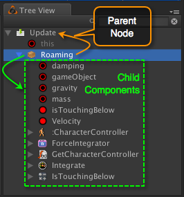

A good understanding of the fundamental building blocks of a visual script is necessary to effectively use iCanScript.
A visual script includes three (3) types of component being:
Nodes;
Ports; and …
Bindings.
Figure 1. Visual Script Building Blocks.
The node is the primary ingredient of visual scripts. Its main purpose is to encapsulate various type of behaviours such as:
variables & functions;
algorithms;
states and state charts; and
nested visual scripts (i.e. packages or submodules).
The ports are the public interfaces to nodes. Multiple ports may exist on the same node each representing a distinct interface. A single port is directional and is either an input port or an output port both never both. The ports are further classified as:
data flow: feeding or extracting data to/from the node behaviour;
control flow: controlling the execution state of the node (boolean value);
state transition: controlling the state transition triggers (state charts only).
The bindings define relationships between ports. Bindings can only be created between compatible ports. Furthermore, bindings are directional and can only exist between an output port and one or more inputs port(s). That is, connecting input ports together or output ports together is not permitted. The following summarizes the permissible bindings:
from an output data port to one or more input data or control port(s) if the data type is compatible;
from an output control port to one or more input data or control port(s) if the data type is compatible with a boolean value;
from an output state port to one input state port using a transition trigger module.
Exception: iCanScript includes a special port, named the Multiplexer Port, that bridges multiple output ports into a single output port. This port is especially useful when multiple exclusive execution paths of a visual script must combine into a single set of data values. (see [Data Flow Diagram][] for additional details).
iCanScript Advanced Topic
iCanScript internally implements the Multiplexer Port using a specialized data multiplexer node. For convenience to the user, this multiplexer node is always iconized and positioned on the edge of the parent node giving the illusion of being a multiplexer port.
Node Anatomy
The node is by far the most elaborate component of visual scripts. It plays a key role in the structure, execution, and layout of the visual script.
All nodes in iCanScript share a common set of attributes:
Name: A character string representation of the node;
Type: Identifies the node specialization.
Tree-like Hierarchical Structure:
A parent node;
Zero or more child components:
Ports;
Child Nodes (nested Visual Script).
Graphical Representation: (see figure 3
Position within the parent node;
Display State:
Unfolded;
Folded; or
Iconized.
The following image depicts an unfolded node as seen in the Visual Editor:
Figure 2. Anatomy of an unfolded node as seen in the Visual Editor.
The following image depicts the same unfolded node as seen in the Tree View:

Figure 3. Anatomy of an unfolded node as seen in the Tree View.
Node Name: User configurable name for the node. The name is editable in the inspector or the hierarchy tree. The programmatic function / type name is used by default.
Iconize Control: Clicking this pictogram causes the node to take its iconic representation.
Fold/Unfold Control: Clicking this pictogram toggles the node between its folded and unfolded representation. The fold/unfold control is available only for those node types that can contain nested visual scripts. (see [Node Types] for details).
Node Ports: Ports are positioned on any of the four node edges.
Port Name is displayed inside the node;
Port Value is display outside the node.
Nested Visual Script: The central area of the node is used to manage the nested child nodes. The child node container is only visible when the node is unfolded. See section [Node Types] for details on which node types support nested children.